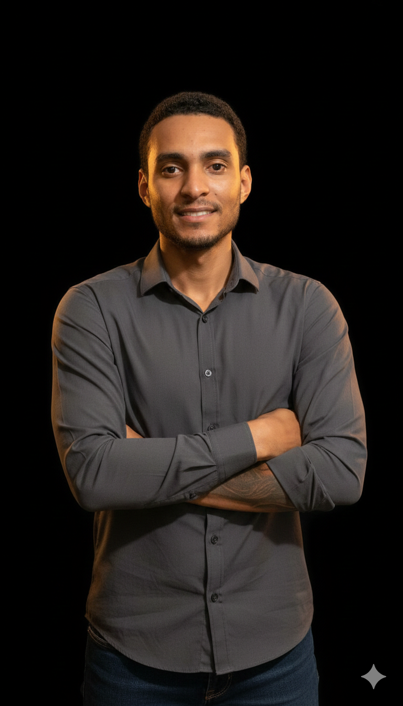
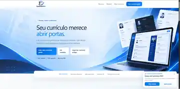
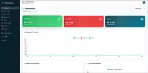
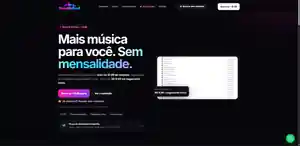
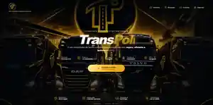

Aprendizado contínuo
Explorar tecnologias e evoluir a cada projeto.
OLÁ, MEU NOME É FELIPE
Sou Felipe Andrade, estudante de Análise e Desenvolvimento de Sistemas e desenvolvedor em constante evolução. Gosto de construir aplicações úteis, interfaces intuitivas e experiências que resolvem problemas reais.

FADesenvolvedor de Software
A tecnologia me permite transformar curiosidade em coisas que as pessoas realmente podem usar.
Sou estudante de Análise e Desenvolvimento de Sistemas na Estácio e venho desenvolvendo projetos próprios para transformar conhecimento em experiência prática. Tenho interesse tanto no front-end quanto no back-end, buscando entender o produto como um todo.
Também concluí o curso FluêncIA — Fundamentos da Inteligência Artificial, do Senai São Paulo. Valorizo aprendizado contínuo, organização e atenção aos detalhes em cada etapa do desenvolvimento.
Acompanhe minha evolução no GitHub ↗Explorar tecnologias e evoluir a cada projeto.
Construir experiências úteis, claras e consistentes.
Entender desafios e transformar ideias em soluções.
Interfaces e experiências web.
Lógica, APIs e persistência.
Fluxo de desenvolvimento.
+ Tecnologias e ferramentas em constante aprendizado.
Uma seleção de sistemas que estou criando e evoluindo — de ferramentas para o dia a dia a plataformas completas de gestão.

CAPTURA REAL DO PROJETOPlataforma gratuita para criar currículos profissionais com modelos prontos, sugestões por profissão e preenchimento guiado. O usuário pode começar sem criar uma conta.
Ver projeto no GitHub ↗
CAPTURA REAL DO PROJETOGestão financeira para pessoas e pequenos negócios, com controle de receitas e despesas, cartões, orçamentos, metas, gráficos e relatórios exportáveis.
Ver projeto no GitHub ↗ CAPTURA REAL DO PROJETO
CAPTURA REAL DO PROJETOLoja virtual de moda streetwear com identidade visual própria, experiência de compra moderna e estrutura de gestão de produtos, estoque e fornecedores.
Ver projeto no GitHub ↗
CAPTURA REAL DO PROJETOProjeto digital apresentado com a captura real da sua interface. Uma das soluções desenvolvidas por Felipe Andrade.
Ver projetos no GitHub ↗
CAPTURA REAL DO PROJETOAplicativo de computador de bordo para Euro Truck Simulator 2, com integração à telemetria do jogo e experiência desktop inspirada em tablets automotivos.
Ver projeto no GitHub ↗As imagens apresentam capturas reais das interfaces dos projetos. Acesse os links para conhecer os produtos e acompanhar sua evolução.
Estou aberto a oportunidades, projetos e boas conversas sobre tecnologia.